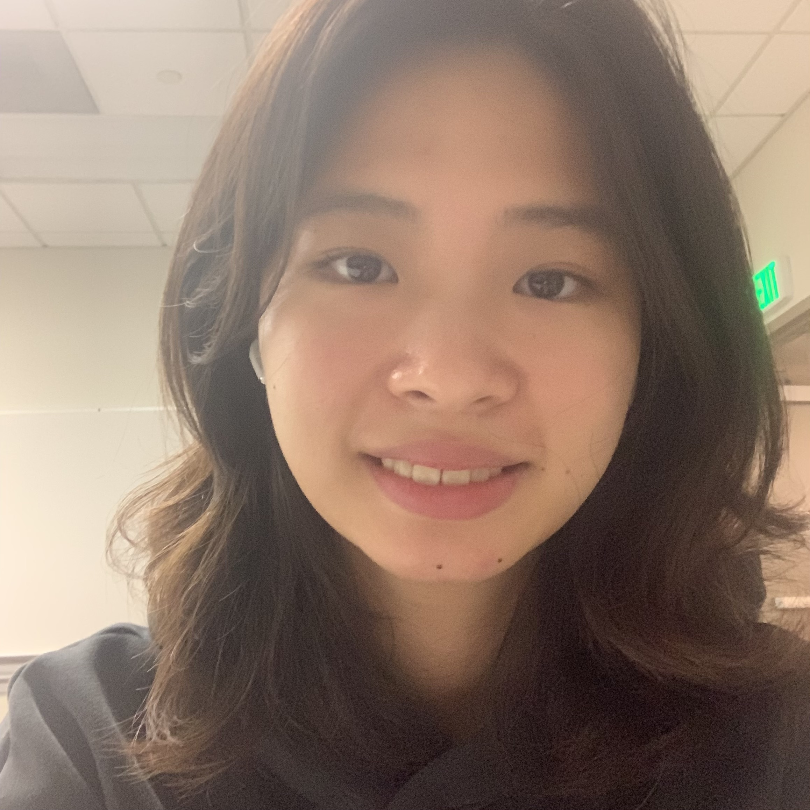

Pronoun: she/her
Email: xinyuf@usc.edu
{kind=link}
Xinyu (Lindsey) Feng 封欣雨
Hi, Lindsey here!
I am a junior majoring in Computer Science and Applied Math at University of Southern California. I am currently interested in:- web design (obviously ;))
- research involving natural language processing
- creative writing
Also some personal updates:
- Finish the research project on named-entity recognition w/ demonstration-based learning. Enjoy the process and am currently in search for the next one - specifically on semantic parsing or logical inference - please email me if you feel like adding me up to your team!
- I am thrilled to annouce that I'll be starting my software engineer internship for summer 2022 at Momentive.ai (former SurveyMonkey)! Super excited for it! I am actually planning on writing another page about my experience in job search and how I handle failure and stuff - to remind myself to value past failures just as much as what I have achieved and also to help my readers out (if they really help)
Last update: Nov. 17 2021